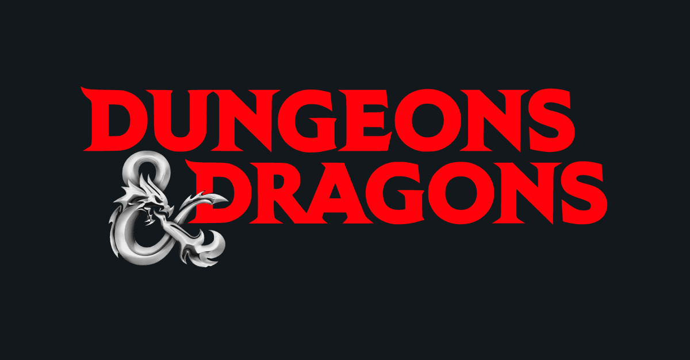

My Interests & Hobbies

Video Games & Tabletop RPGs
Gaming has been a central part of my life for as long as I can remember. I grew up playing everything from platformers to role-playing games, and over time my taste gravitated toward titles that emphasize story, strategy, and player choice. Baldur's Gate 3 is one of my all-time favorites because of how faithfully it brings the Dungeons and Dragons ruleset to life. Every encounter feels meaningful, every dialogue choice carries weight, and the freedom to approach problems in wildly different ways keeps me coming back for new playthroughs. It is the kind of game that rewards creative thinking, which is probably why it resonates so much with me as a programmer.
Dungeons and Dragons itself holds a special place in my heart. I have been playing tabletop D&D sessions with friends for years, both as a player and occasionally as a Dungeon Master. There is nothing quite like sitting around a table, rolling dice, and building a story from scratch. DMing in particular has taught me a lot about planning, improv, and understanding what other people find fun. Those skills translate surprisingly well into software development, where you are constantly adapting to changing requirements and trying to build something that people will actually enjoy using.
I also spend a significant amount of time on Roblox. While many people think of it as a kids platform, Roblox has an incredibly powerful game engine and a massive community. I love exploring games and experiences that push the boundaries of what the platform can do, and I have experimented with Roblox Studio myself to prototype simple game ideas. The fact that Roblox uses Lua scripting makes it a great sandbox for learning game development concepts like physics, UI design, and modeling in a easy way. Roblox will always have a dear place in my heart, and it is without a doubt one of my favorite games.
Some of My Favorite Games
- Baldur's Gate 3 — A masterpiece, RPG storytelling built on D&D 5e rules
- Dungeons & Dragons (tabletop) — Storytelling and strategy with friends around a table
- Roblox — A gaming platform for playing and building fun and creative game experiences
- Minecraft — The original sandbox that sparked my interest in building and creating
- Elden Ring — Challenging open-world exploration with incredible world design and lore
Design & Programming
When I am not gaming, I channel that same creative energy into design and coding. I enjoy using Figma and Canva for visual projects, and I am always looking for ways to bring the kind of polished, immersive experiences I love in games into the software I build. Gaming and programming feed into each other for me, and I would not have it any other way.